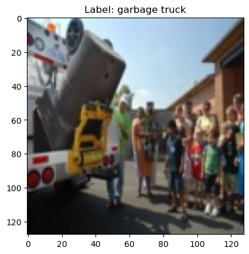
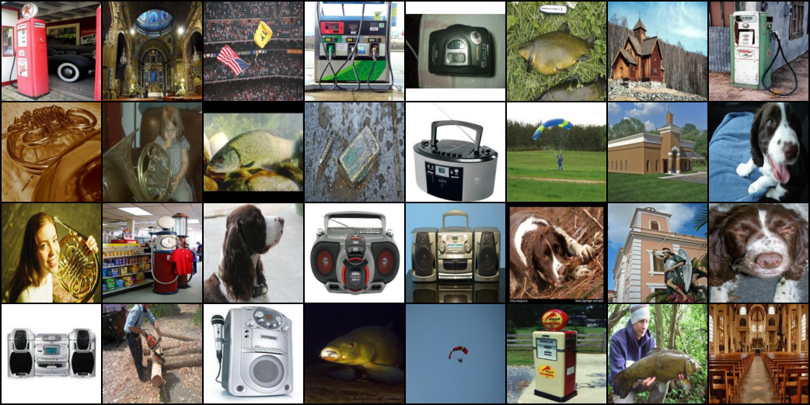
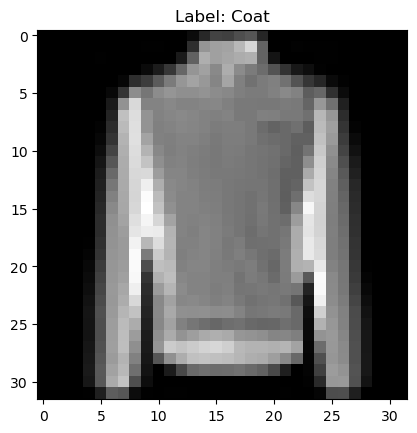

# ImagePlotMixin.plot(test, 0)
# ImagePlotMixin.plot_grid(test, 2,2)
# ImagePlotMixin.plot(test, 0, int2label = {0:'zero', 1:'one', 2:'two', 3:'three', 4:'four', 5:'five', 6:'six', 7:'seven', 8:'eight', 9:'nine'})
# ImagePlotMixin.plot(test, 0, int2label = test.hf_ds.features['label'].int2str)
# ImagePlotMixin.plot_grid(test, 2,2, int2label = test.hf_ds.features['label'].int2str)Image Datasets
Image datasets
Plots
make_grid
make_grid (images, size=64)
Given a list of PIL images, stack them together into a line for easy viewing
show_images
show_images (x:torch.Tensor, ncols:int=8)
Given a batch of images x, make a grid and convert to PIL
ImageDataset Mixin
ImagePlotMixin
ImagePlotMixin ()
Mixin class for image datasets providing visualization of (image, label) samples
Image Dataset
ImageDataset
ImageDataset (name:str='mnist', *args, data_dir:Optional[str]='../data/image', split='train', tran sforms:Optional[torchvision.transforms.v2._container.Compos e]=Compose( ToTensor()), streaming:bool=False, exclude_grey_scale=False, verification_mode='no_checks', from_image_folder=False, from_disk=False)
Image dataset
| Type | Default | Details | |
|---|---|---|---|
| name | str | mnist | |
| args | VAR_POSITIONAL | ||
| data_dir | Optional | ../data/image | path where data is saved if None default to hugging face cache |
| split | str | train | train or test dataset |
| transforms | Optional | Compose( ToTensor()) | |
| streaming | bool | False | TODO: support and test streaming datasest |
| exclude_grey_scale | bool | False | |
| verification_mode | str | no_checks | |
| from_image_folder | bool | False | |
| from_disk | bool | False |
Image normalization
if both train and validation splits are available normalize both. else just train
normalize_image_datasets
normalize_image_datasets (name, data_dir='../data/image', splits=['train', 'validation'])
mean, std = normalize_image_datasets('slegroux/tiny-imagenet-200-clean')
print(f"mean:{mean}, std: {std}")Image DataModule
ImageDataModule
ImageDataModule (name:str, *args, data_dir:Optional[str]='~/Data/', trans forms:Union[torchvision.transforms.v2._container.Compose ,Callable,NoneType]=Compose( ToTensor() Normalize(mean=[0.1307], std=[0.3081], inplace=False) ), train_val_split:List[float]=[0.8, 0.2], batch_size:int=64, num_workers:int=0, pin_memory:bool=False, persistent_workers:bool=False, **kwargs)
Mixin class for image datasets providing visualization of (image, label) samples
| Type | Default | Details | |
|---|---|---|---|
| name | str | name of dataset from hugging face | |
| args | VAR_POSITIONAL | arguments to pass to hugging face dataset | |
| data_dir | Optional | ~/Data/ | path to source data dir where data is stored |
| transforms | Union | Compose( ToTensor() Normalize(mean=[0.1307], std=[0.3081], inplace=False) ) |
transform to apply to each sample |
| train_val_split | List | [0.8, 0.2] | train val test percentage |
| batch_size | int | 64 | size of compute batch |
| num_workers | int | 0 | num_workers equal 0 means that it’s the main process that will do the data loading when needed, num_workers equal 1 is the same as any n, but you’ll only have a single worker, so it might be slow |
| pin_memory | bool | False | If you load your samples in the Dataset on CPU and would like to push it during training to the GPU, you can speed up the host to device transfer by enabling pin_memory. This lets your DataLoader allocate the samples in page-locked memory, which speeds-up the transfer |
| persistent_workers | bool | False | persist |
| kwargs | VAR_KEYWORD |
Usage
dm = ImageDataModule(
'frgfm/imagenette','160px',
transforms=transforms.Compose([transforms.ToTensor(),transforms.Resize((128, 128))]),
data_dir='../data/image',
train_val_split=[0.8, 0.2],
batch_size = 16,
num_workers = 0, # main process
pin_memory= False,
persistent_workers=False,
exclude_grey_scale = True
)
# download or reference data from dir
dm.prepare_data()
# define train, eval, test subsets
dm.setup()
print(f" num_classes: {dm.num_classes}, labels: {dm.label_names}, img shape: {dm.train_ds[0][0].shape}")
# show data
dm.show(1)
dm.show_grid(3,3)/Users/slegroux/miniforge3/envs/nimrod/lib/python3.11/site-packages/torchvision/transforms/v2/_deprecated.py:42: UserWarning: The transform `ToTensor()` is deprecated and will be removed in a future release. Instead, please use `v2.Compose([v2.ToImage(), v2.ToDtype(torch.float32, scale=True)])`.Output is equivalent up to float precision.
warnings.warn(
[18:42:31] INFO - Init ImageDataModule for frgfm/imagenette
/Users/slegroux/miniforge3/envs/nimrod/lib/python3.11/site-packages/lightning/pytorch/utilities/parsing.py:209: Attribute 'transforms' is an instance of `nn.Module` and is already saved during checkpointing. It is recommended to ignore them using `self.save_hyperparameters(ignore=['transforms'])`.
[18:42:33] INFO - loading dataset frgfm/imagenette with args ('160px',) from split train
[18:42:34] WARNING - filtering out grey scale images
[18:42:37] INFO - loading dataset frgfm/imagenette with args ('160px',) from split validation
[18:42:38] WARNING - filtering out grey scale images
[18:42:38] INFO - split train into train/val [0.8, 0.2]
[18:42:38] INFO - train: 7437 val: 1859, test: 3856 num_classes: 10, labels: ['tench', 'English springer', 'cassette player', 'chain saw', 'church', 'French horn', 'garbage truck', 'gas pump', 'golf ball', 'parachute'], img shape: torch.Size([3, 128, 128])
dm.hparams.batch_size = 32
print(dm.hparams)
xb, yb = next(iter(dm.train_dataloader()))
# print(xb.shape)
dm.show_batch(xb)"batch_size": 32
"data_dir": ../data/image
"exclude_grey_scale": True
"name": frgfm/imagenette
"num_workers": 0
"persistent_workers": False
"pin_memory": False
"train_val_split": [0.8, 0.2]
"transforms": Compose(
ToTensor()
Resize(size=[128, 128], interpolation=InterpolationMode.BILINEAR, antialias=True)
)/var/folders/b5/v9y3kpzs29g41d99xvrdp3yr0000gn/T/ipykernel_78438/575801441.py:163: DeprecationWarning: __array__ implementation doesn't accept a copy keyword, so passing copy=False failed. __array__ must implement 'dtype' and 'copy' keyword arguments. To learn more, see the migration guide https://numpy.org/devdocs/numpy_2_0_migration_guide.html#adapting-to-changes-in-the-copy-keyword
grid_im = Image.fromarray(np.array(grid_im).astype(np.uint8))
# dm.label_names['tench',
'English springer',
'cassette player',
'chain saw',
'church',
'French horn',
'garbage truck',
'gas pump',
'golf ball',
'parachute']# access data batches via dataloader
test_dl = dm.test_dataloader()
# X,Y = next(iter(test_dl))
# print("X dim(B,C,W,H): ", X.shape, "Y: dim(B)", Y.shape)Config
# cfg = OmegaConf.load("../config/image/data/mnist.yaml")
# print(cfg.datamodule)
# dm = instantiate(cfg.datamodule)
# dm.prepare_data()
# dm.setup()
# test_dl = dm.test_dataloader()
# len(dm.test_ds), len(dm.train_ds), len(dm.val_ds)
cfg = OmegaConf.load('../config/data/image/fashion_mnist.yaml')
dm = instantiate(cfg)
dm.prepare_data()
dm.setup()
print(f"num_classes: {dm.num_classes}, batch_size: {dm.batch_size}")
print(f"labels: {dm.label_names}")
x, y = dm.test_ds[0]
print(f"X: {x.shape}, Y: {y}")
dm.show(1)
dm.show_grid(3,3)[17:28:55] INFO - Init ImageDataModule for fashion_mnist
[17:29:08] INFO - split train into train/val [0.8, 0.2]
[17:29:08] INFO - train: 48000 val: 12000, test: 10000num_classes: 10, batch_size: 128
labels: ['T - shirt / top', 'Trouser', 'Pullover', 'Dress', 'Coat', 'Sandal', 'Shirt', 'Sneaker', 'Bag', 'Ankle boot']
X: torch.Size([1, 32, 32]), Y: 9
cfg = OmegaConf.load('../config/data/image/smithsonian_butterflies.yaml')
dm = instantiate(cfg)
dm.prepare_data()
dm.setup()
print(f"num_classes: {dm.num_classes}, batch_size: {dm.batch_size}")
print(f"labels: {dm.label_names}")
x, y = dm.test_ds[0]
print(f"X: {x.shape}, Y: {y}")
x,y = next(iter(dm.train_dataloader()))
print(f"X: {x.shape}, Y: {y.shape}")
dm.show(1)[17:40:22] INFO - Init ImageDataModule for huggan/smithsonian_butterflies_subset
Repo card metadata block was not found. Setting CardData to empty.
[17:40:22] WARNING - Repo card metadata block was not found. Setting CardData to empty.
Repo card metadata block was not found. Setting CardData to empty.
[17:40:24] WARNING - Repo card metadata block was not found. Setting CardData to empty.
[17:40:29] WARNING - split train into train/val/test [0.8, 0.2]
[17:40:29] INFO - train: 800 val: 200, test: 200
[17:40:29] INFO - split train into train/val [0.8, 0.2]
WARNING:matplotlib.image:Clipping input data to the valid range for imshow with RGB data ([0..1] for floats or [0..255] for integers). Got range [-0.8029231..1.0000005].
[17:40:29] WARNING - Clipping input data to the valid range for imshow with RGB data ([0..1] for floats or [0..255] for integers). Got range [-0.8029231..1.0000005].num_classes: 45, batch_size: 128
labels: ['Animalia, Arthropoda, Insecta, Lepidoptera, Pyralidae, Epipaschiinae', 'Animalia, Arthropoda, Insecta, Lepidoptera, Geometridae, Larentiinae', 'Animalia, Arthropoda, Hexapoda, Insecta, Lepidoptera, Nymphalidae, Nymphalinae', 'Animalia, Arthropoda, Hexapoda, Insecta, Lepidoptera, Nymphalidae, Satyrinae', 'Animalia, Arthropoda, Hexapoda, Insecta, Lepidoptera, Saturniidae, Saturniinae', 'Animalia, Arthropoda, Hexapoda, Insecta, Lepidoptera, Nymphalidae, Limenitidinae', 'Animalia, Arthropoda, Hexapoda, Insecta, Lepidoptera, Papilionidae, Papilioninae', 'Animalia, Arthropoda, Hexapoda, Insecta, Lepidoptera, Pieridae, Dismorphiinae', 'Animalia, Arthropoda, Insecta, Lepidoptera, Arctiidae', 'Animalia, Arthropoda, Hexapoda, Insecta, Lepidoptera, Lycaenidae', 'Animalia, Arthropoda, Insecta, Lepidoptera, Papilionidae, Parnassiinae', 'Animalia, Arthropoda, Insecta, Lepidoptera, Pyralidae', 'Animalia, Arthropoda, Hexapoda, Insecta, Lepidoptera, Pieridae', 'Animalia, Arthropoda, Hexapoda, Insecta, Lepidoptera, Nymphalidae, Heliconinae', 'Animalia, Arthropoda, Hexapoda, Insecta, Lepidoptera, Arctiidae', 'Animalia, Arthropoda, Hexapoda, Insecta, Lepidoptera, Noctuidae, Erebinae', 'Animalia, Arthropoda, Hexapoda, Insecta, Lepidoptera, Nymphalidae, Morphinae', 'Animalia, Arthropoda, Insecta, Lepidoptera, Pieridae, Coliadinae', 'Animalia, Arthropoda, Insecta, Lepidoptera, Pieridae, Pierinae', 'Animalia, Arthropoda, Hexapoda, Insecta, Lepidoptera, Papilionidae', 'Animalia, Arthropoda, Insecta, Lepidoptera, Geometridae, Ennominae', 'Animalia, Arthropoda, Insecta, Lepidoptera, Pieridae, Dismorphiinae', 'Animalia, Arthropoda, Hexapoda, Insecta, Lepidoptera, Sphingidae', 'Animalia, Arthropoda, Insecta, Lepidoptera, Lasiocampidae', 'Animalia, Arthropoda, Hexapoda, Insecta, Lepidoptera, Nymphalidae, Danainae', 'Animalia, Arthropoda, Hexapoda, Insecta, Lepidoptera, Pieridae, Pierinae', 'Animalia, Arthropoda, Insecta, Lepidoptera, Pieridae', 'Animalia, Arthropoda, Insecta, Lepidoptera, Nymphalidae, Nymphalinae', 'Animalia, Arthropoda, Hexapoda, Insecta, Lepidoptera, Saturniidae', 'Animalia, Arthropoda, Insecta, Lepidoptera, Papilionidae, Papilioninae', 'Animalia, Arthropoda, Insecta, Lepidoptera, Geometridae, Oenochrominae', 'Animalia, Arthropoda, Insecta, Lepidoptera, Glossata, Gelechiidae', 'Animalia, Arthropoda, Hexapoda, Insecta, Lepidoptera, Pieridae, Coliadinae', 'Animalia, Arthropoda, Hexapoda, Insecta, Lepidoptera, Lycaenidae, Lycaeninae', 'Animalia, Arthropoda, Hexapoda, Insecta, Lepidoptera, Uraniidae', 'Animalia, Arthropoda, Hexapoda, Insecta, Lepidoptera, Nymphalidae, Heliconiinae', 'Animalia, Arthropoda, Insecta, Lepidoptera, Nymphalidae, Charaxinae', 'Animalia, Arthropoda, Hexapoda, Insecta, Pterygota, Holometabola, Lepidoptera, Nymphalidae, Danainae', 'Animalia, Arthropoda, Insecta, Lepidoptera, Geometridae, Sterrhinae', 'Animalia, Arthropoda, Hexapoda, Insecta, Lepidoptera, Nymphalidae', 'Animalia, Arthropoda, Insecta, Lepidoptera, Tortricidae', 'Animalia, Arthropoda, Insecta, Lepidoptera, Geometridae, Geometrinae', 'Animalia, Arthropoda, Hexapoda, Insecta, Lepidoptera, Nymphalidae, Biblidinae', 'Animalia, Arthropoda, Hexapoda, Insecta, Lepidoptera, Nymphalidae, Charaxinae', 'Animalia, Arthropoda, Hexapoda, Insecta, Lepidoptera, Lycaenidae, Polyommatinae']
X: torch.Size([3, 128, 128]), Y: 7
X: torch.Size([128, 3, 128, 128]), Y: torch.Size([128])Image Super Resolution Dataset
ImageSuperResDataset
ImageSuperResDataset (name:str='fashion_mnist', data_dir:str='../data/image', split='train', transf orm_x:Optional[torchvision.transforms.v2._container .Compose]=Compose( ToTensor() Compose( Resize(size=[32, 32], interpolation=InterpolationMode.BILINEAR, antialias=True) Resize(size=[64, 64], interpolation=InterpolationMode.BILINEAR, antialias=True) ) ), transform_y:Optional[torchvi sion.transforms.v2._container.Compose]=Compose( ToTensor()))
Image dataset
ds = ImageSuperResDataset(
'slegroux/tiny-imagenet-200-clean',
data_dir='../data/image',
split='test'
)[20:53:06] INFO - loading dataset slegroux/tiny-imagenet-200-clean with args () from split test
[20:53:06] INFO - loading dataset slegroux/tiny-imagenet-200-clean from split test
Overwrite dataset info from restored data version if exists.
[20:53:07] INFO - Overwrite dataset info from restored data version if exists.
Loading Dataset info from ../data/image/slegroux___tiny-imagenet-200-clean/default/0.0.0/4b908d89fab3eb36aa8ebcd41c1996b28da7d6f2
[20:53:07] INFO - Loading Dataset info from ../data/image/slegroux___tiny-imagenet-200-clean/default/0.0.0/4b908d89fab3eb36aa8ebcd41c1996b28da7d6f2
Found cached dataset tiny-imagenet-200-clean (/user/s/slegroux/Projects/nimrod/nbs/../data/image/slegroux___tiny-imagenet-200-clean/default/0.0.0/4b908d89fab3eb36aa8ebcd41c1996b28da7d6f2)
[20:53:07] INFO - Found cached dataset tiny-imagenet-200-clean (/user/s/slegroux/Projects/nimrod/nbs/../data/image/slegroux___tiny-imagenet-200-clean/default/0.0.0/4b908d89fab3eb36aa8ebcd41c1996b28da7d6f2)
Loading Dataset info from /user/s/slegroux/Projects/nimrod/nbs/../data/image/slegroux___tiny-imagenet-200-clean/default/0.0.0/4b908d89fab3eb36aa8ebcd41c1996b28da7d6f2
[20:53:07] INFO - Loading Dataset info from /user/s/slegroux/Projects/nimrod/nbs/../data/image/slegroux___tiny-imagenet-200-clean/default/0.0.0/4b908d89fab3eb36aa8ebcd41c1996b28da7d6f2idx = torch.randint(0, len(ds), ())
x,y = ds[idx]
print(x.shape, y.shape)
fig, ax = plt.subplots(1,2)
fig.suptitle('Super resolution')
fig.tight_layout()
ax[0].imshow(x.permute(1,2,0).squeeze())
ax[0].set_title('low res')
ax[1].imshow(y.permute(1,2,0).squeeze())
ax[1].set_title('high res')torch.Size([3, 64, 64]) torch.Size([3, 64, 64])
Text(0.5, 1.0, 'high res')Image SuperRes DataModule
ImageSuperResDataModule
ImageSuperResDataModule (name:str='slegroux/tiny-imagenet-200-clean', data_dir:str='../data/image', transform_x:Option al[torchvision.transforms.v2._container.Compose] =Sequential( (0): ToTensor() (1): Sequential( (0): Resize(size=[32, 32], interpolation=InterpolationMode.BILINEAR, antialias=True) (1): Resize(size=[64, 64], interpolation=InterpolationMode.BILINEAR, antialias=True) ) ), transform_y:Optional[torc hvision.transforms.v2._container.Compose]=Sequen tial( (0): ToTensor() ), train_val_split:Optional[List[float]]=[0.8, 0.2], batch_size:int=64, num_workers:int=0, pin_memory:bool=False, persistent_workers:bool=False)
Mixin class for image datasets providing visualization of (image, label) samples
dm = ImageSuperResDataModule(
'fashion_mnist',
data_dir='../data/image',
transform_x=transforms.Compose([transforms.ToTensor(), transforms.Resize(32)]),
transform_y=transforms.Compose([transforms.ToTensor(), transforms.Resize(32)]),
)/user/s/slegroux/miniconda3/envs/nimrod/lib/python3.11/site-packages/torchvision/transforms/v2/_deprecated.py:42: UserWarning: The transform `ToTensor()` is deprecated and will be removed in a future release. Instead, please use `v2.Compose([v2.ToImage(), v2.ToDtype(torch.float32, scale=True)])`.Output is equivalent up to float precision.
warnings.warn(
[21:24:09] INFO - Init ImageSuperResDataModule for fashion_mnist
/user/s/slegroux/miniconda3/envs/nimrod/lib/python3.11/site-packages/lightning/pytorch/utilities/parsing.py:209: Attribute 'transform_x' is an instance of `nn.Module` and is already saved during checkpointing. It is recommended to ignore them using `self.save_hyperparameters(ignore=['transform_x'])`.
/user/s/slegroux/miniconda3/envs/nimrod/lib/python3.11/site-packages/lightning/pytorch/utilities/parsing.py:209: Attribute 'transform_y' is an instance of `nn.Module` and is already saved during checkpointing. It is recommended to ignore them using `self.save_hyperparameters(ignore=['transform_y'])`.
[21:24:09] INFO - Init ImageDataModule for fashion_mnist
/user/s/slegroux/miniconda3/envs/nimrod/lib/python3.11/site-packages/lightning/pytorch/utilities/parsing.py:209: Attribute 'transforms' is an instance of `nn.Module` and is already saved during checkpointing. It is recommended to ignore them using `self.save_hyperparameters(ignore=['transforms'])`.dm.prepare_data()
dm.setup()[21:09:03] INFO - loading dataset fashion_mnist with args () from split train
[21:09:03] INFO - loading dataset fashion_mnist from split train
Overwrite dataset info from restored data version if exists.
[21:09:05] INFO - Overwrite dataset info from restored data version if exists.
Loading Dataset info from ../data/image/fashion_mnist/fashion_mnist/0.0.0/531be5e2ccc9dba0c201ad3ae567a4f3d16ecdd2
[21:09:05] INFO - Loading Dataset info from ../data/image/fashion_mnist/fashion_mnist/0.0.0/531be5e2ccc9dba0c201ad3ae567a4f3d16ecdd2
Found cached dataset fashion_mnist (/user/s/slegroux/Projects/nimrod/nbs/../data/image/fashion_mnist/fashion_mnist/0.0.0/531be5e2ccc9dba0c201ad3ae567a4f3d16ecdd2)
[21:09:05] INFO - Found cached dataset fashion_mnist (/user/s/slegroux/Projects/nimrod/nbs/../data/image/fashion_mnist/fashion_mnist/0.0.0/531be5e2ccc9dba0c201ad3ae567a4f3d16ecdd2)
Loading Dataset info from /user/s/slegroux/Projects/nimrod/nbs/../data/image/fashion_mnist/fashion_mnist/0.0.0/531be5e2ccc9dba0c201ad3ae567a4f3d16ecdd2
[21:09:05] INFO - Loading Dataset info from /user/s/slegroux/Projects/nimrod/nbs/../data/image/fashion_mnist/fashion_mnist/0.0.0/531be5e2ccc9dba0c201ad3ae567a4f3d16ecdd2
[21:09:09] INFO - loading dataset fashion_mnist with args () from split test
[21:09:09] INFO - loading dataset fashion_mnist from split test
Overwrite dataset info from restored data version if exists.
[21:09:11] INFO - Overwrite dataset info from restored data version if exists.
Loading Dataset info from ../data/image/fashion_mnist/fashion_mnist/0.0.0/531be5e2ccc9dba0c201ad3ae567a4f3d16ecdd2
[21:09:11] INFO - Loading Dataset info from ../data/image/fashion_mnist/fashion_mnist/0.0.0/531be5e2ccc9dba0c201ad3ae567a4f3d16ecdd2
Found cached dataset fashion_mnist (/user/s/slegroux/Projects/nimrod/nbs/../data/image/fashion_mnist/fashion_mnist/0.0.0/531be5e2ccc9dba0c201ad3ae567a4f3d16ecdd2)
[21:09:11] INFO - Found cached dataset fashion_mnist (/user/s/slegroux/Projects/nimrod/nbs/../data/image/fashion_mnist/fashion_mnist/0.0.0/531be5e2ccc9dba0c201ad3ae567a4f3d16ecdd2)
Loading Dataset info from /user/s/slegroux/Projects/nimrod/nbs/../data/image/fashion_mnist/fashion_mnist/0.0.0/531be5e2ccc9dba0c201ad3ae567a4f3d16ecdd2
[21:09:11] INFO - Loading Dataset info from /user/s/slegroux/Projects/nimrod/nbs/../data/image/fashion_mnist/fashion_mnist/0.0.0/531be5e2ccc9dba0c201ad3ae567a4f3d16ecdd2
[21:09:13] INFO - loading dataset fashion_mnist with args () from split test
[21:09:13] INFO - loading dataset fashion_mnist from split test
Overwrite dataset info from restored data version if exists.
[21:09:15] INFO - Overwrite dataset info from restored data version if exists.
Loading Dataset info from ../data/image/fashion_mnist/fashion_mnist/0.0.0/531be5e2ccc9dba0c201ad3ae567a4f3d16ecdd2
[21:09:15] INFO - Loading Dataset info from ../data/image/fashion_mnist/fashion_mnist/0.0.0/531be5e2ccc9dba0c201ad3ae567a4f3d16ecdd2
Found cached dataset fashion_mnist (/user/s/slegroux/Projects/nimrod/nbs/../data/image/fashion_mnist/fashion_mnist/0.0.0/531be5e2ccc9dba0c201ad3ae567a4f3d16ecdd2)
[21:09:15] INFO - Found cached dataset fashion_mnist (/user/s/slegroux/Projects/nimrod/nbs/../data/image/fashion_mnist/fashion_mnist/0.0.0/531be5e2ccc9dba0c201ad3ae567a4f3d16ecdd2)
Loading Dataset info from /user/s/slegroux/Projects/nimrod/nbs/../data/image/fashion_mnist/fashion_mnist/0.0.0/531be5e2ccc9dba0c201ad3ae567a4f3d16ecdd2
[21:09:15] INFO - Loading Dataset info from /user/s/slegroux/Projects/nimrod/nbs/../data/image/fashion_mnist/fashion_mnist/0.0.0/531be5e2ccc9dba0c201ad3ae567a4f3d16ecdd2
[21:09:15] WARNING - same dataset for validation and testdm.show(torch.randint(0, len(dm.train_dataloader()),(1,)))cfg = OmegaConf.load('../config/data/image/tiny_imagenet_superres.yaml')
dm = instantiate(cfg)
dm.prepare_data()
# dm.setup()
dm.show(0)[10:59:53] INFO - Init ImageSuperResDataModule for slegroux/tiny-imagenet-200-clean
[10:59:53] INFO - Init ImageDataModule for slegroux/tiny-imagenet-200-clean
/Users/slegroux/miniforge3/envs/nimrod/lib/python3.11/site-packages/lightning/pytorch/utilities/parsing.py:209: Attribute 'transforms' is an instance of `nn.Module` and is already saved during checkpointing. It is recommended to ignore them using `self.save_hyperparameters(ignore=['transforms'])`.
[10:59:56] INFO - loading dataset slegroux/tiny-imagenet-200-clean with args () from split train
[10:59:56] INFO - loading dataset slegroux/tiny-imagenet-200-clean from split train
Overwrite dataset info from restored data version if exists.
[10:59:58] INFO - Overwrite dataset info from restored data version if exists.
Loading Dataset info from ../data/image/slegroux___tiny-imagenet-200-clean/default/0.0.0/4b908d89fab3eb36aa8ebcd41c1996b28da7d6f2
[10:59:58] INFO - Loading Dataset info from ../data/image/slegroux___tiny-imagenet-200-clean/default/0.0.0/4b908d89fab3eb36aa8ebcd41c1996b28da7d6f2
Found cached dataset tiny-imagenet-200-clean (/Users/slegroux/Projects/nimrod/nbs/../data/image/slegroux___tiny-imagenet-200-clean/default/0.0.0/4b908d89fab3eb36aa8ebcd41c1996b28da7d6f2)
[10:59:58] INFO - Found cached dataset tiny-imagenet-200-clean (/Users/slegroux/Projects/nimrod/nbs/../data/image/slegroux___tiny-imagenet-200-clean/default/0.0.0/4b908d89fab3eb36aa8ebcd41c1996b28da7d6f2)
Loading Dataset info from /Users/slegroux/Projects/nimrod/nbs/../data/image/slegroux___tiny-imagenet-200-clean/default/0.0.0/4b908d89fab3eb36aa8ebcd41c1996b28da7d6f2
[10:59:58] INFO - Loading Dataset info from /Users/slegroux/Projects/nimrod/nbs/../data/image/slegroux___tiny-imagenet-200-clean/default/0.0.0/4b908d89fab3eb36aa8ebcd41c1996b28da7d6f2
[11:00:05] INFO - loading dataset slegroux/tiny-imagenet-200-clean with args () from split test
[11:00:05] INFO - loading dataset slegroux/tiny-imagenet-200-clean from split test
Overwrite dataset info from restored data version if exists.
[11:00:07] INFO - Overwrite dataset info from restored data version if exists.
Loading Dataset info from ../data/image/slegroux___tiny-imagenet-200-clean/default/0.0.0/4b908d89fab3eb36aa8ebcd41c1996b28da7d6f2
[11:00:07] INFO - Loading Dataset info from ../data/image/slegroux___tiny-imagenet-200-clean/default/0.0.0/4b908d89fab3eb36aa8ebcd41c1996b28da7d6f2
Found cached dataset tiny-imagenet-200-clean (/Users/slegroux/Projects/nimrod/nbs/../data/image/slegroux___tiny-imagenet-200-clean/default/0.0.0/4b908d89fab3eb36aa8ebcd41c1996b28da7d6f2)
[11:00:07] INFO - Found cached dataset tiny-imagenet-200-clean (/Users/slegroux/Projects/nimrod/nbs/../data/image/slegroux___tiny-imagenet-200-clean/default/0.0.0/4b908d89fab3eb36aa8ebcd41c1996b28da7d6f2)
Loading Dataset info from /Users/slegroux/Projects/nimrod/nbs/../data/image/slegroux___tiny-imagenet-200-clean/default/0.0.0/4b908d89fab3eb36aa8ebcd41c1996b28da7d6f2
[11:00:07] INFO - Loading Dataset info from /Users/slegroux/Projects/nimrod/nbs/../data/image/slegroux___tiny-imagenet-200-clean/default/0.0.0/4b908d89fab3eb36aa8ebcd41c1996b28da7d6f2
[11:00:10] INFO - loading dataset slegroux/tiny-imagenet-200-clean with args () from split validation
[11:00:10] INFO - loading dataset slegroux/tiny-imagenet-200-clean from split validation
Overwrite dataset info from restored data version if exists.
[11:00:12] INFO - Overwrite dataset info from restored data version if exists.
Loading Dataset info from ../data/image/slegroux___tiny-imagenet-200-clean/default/0.0.0/4b908d89fab3eb36aa8ebcd41c1996b28da7d6f2
[11:00:12] INFO - Loading Dataset info from ../data/image/slegroux___tiny-imagenet-200-clean/default/0.0.0/4b908d89fab3eb36aa8ebcd41c1996b28da7d6f2
Found cached dataset tiny-imagenet-200-clean (/Users/slegroux/Projects/nimrod/nbs/../data/image/slegroux___tiny-imagenet-200-clean/default/0.0.0/4b908d89fab3eb36aa8ebcd41c1996b28da7d6f2)
[11:00:12] INFO - Found cached dataset tiny-imagenet-200-clean (/Users/slegroux/Projects/nimrod/nbs/../data/image/slegroux___tiny-imagenet-200-clean/default/0.0.0/4b908d89fab3eb36aa8ebcd41c1996b28da7d6f2)
Loading Dataset info from /Users/slegroux/Projects/nimrod/nbs/../data/image/slegroux___tiny-imagenet-200-clean/default/0.0.0/4b908d89fab3eb36aa8ebcd41c1996b28da7d6f2
[11:00:12] INFO - Loading Dataset info from /Users/slegroux/Projects/nimrod/nbs/../data/image/slegroux___tiny-imagenet-200-clean/default/0.0.0/4b908d89fab3eb36aa8ebcd41c1996b28da7d6f2x_mean = torch.tensor([0.4822, 0.4495, 0.3985])
x_std = torch.tensor([0.2771, 0.2690, 0.2826])
tfm_norm = transforms.Normalize(mean=x_mean, std=x_std)
tfm_denorm = transforms.Compose([transforms.Normalize(mean=[0,0,0], std=1/x_std), transforms.Normalize(mean=-x_mean, std=[1,1,1])])
x, y = dm.train_ds[0]
x, y = tfm_denorm(x), tfm_denorm(y)
fig, ax = plt.subplots(1,2, figsize=(4,4))
fig.tight_layout()
ax[0].imshow(x.permute(1,2,0).squeeze())
ax[0].set_title('low res')
ax[1].imshow(y.permute(1,2,0).squeeze())
ax[1].set_title('high res')Text(0.5, 1.0, 'high res')